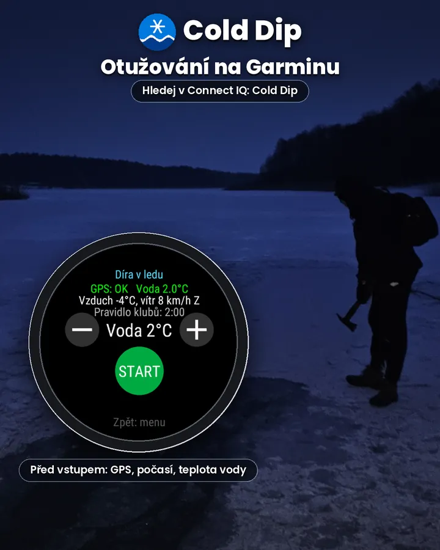
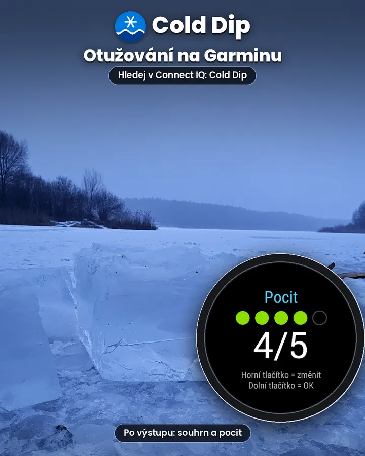

Před vstupem / ve vodě / po výstupu
Horní tlačítko přepíná fáze. Čas ve vodě prostě běží — aplikace vám nikdy neřekne, abyste vylezli. To je vaše rozhodnutí. Poslední čas je jen orientační hodnota, ne cíl, který musíte překonat.
Na hodinkách se aplikace jmenuje Otužování.
Otužování a zimní plavání zaznamenané pořádně — ne jako plavání.
Nebo v aplikaci Connect IQ v telefonu vyhledejte „Cold Dip“.



Dělaná pro otužování, ne pro bazén. Rozhodujete vy, po celou dobu.
Horní tlačítko přepíná fáze. Čas ve vodě prostě běží — aplikace vám nikdy neřekne, abyste vylezli. To je vaše rozhodnutí. Poslední čas je jen orientační hodnota, ne cíl, který musíte překonat.
Tep se zaznamenává po celou dobu. Teplotu vody zadáte ručně a uloží se k aktivitě.
Teplota vzduchu, pocitová teplota a vítr — z počasí Garmin v telefonu.
Místo vstupu se uloží a v Garmin Connect se zobrazí na mapě.
Po každém vstupu krátké hodnocení, jak se cítíte. Navíc špička a zotavení tepu a Body Battery a stres před vstupem.
Vše se v Garmin Connect uloží jako vlastní aktivita, ne jako plavání.
Angličtina, polština, němčina, čeština, slovenština, finština, norština, švédština, španělština, ruština a ukrajinština. Aplikace se automaticky přepne do jazyka hodinek.
Forerunner, Fenix, Epix, Enduro, Venu, Vivoactive, Instinct 2 / 3 / E / Crossover a další. Není podporována na velmi starých hodinkách, například Forerunner 920XT (Connect IQ 1.x).
Vyhledejte svůj model. Seznam odpovídá 133 hodinkám v Cold Dip 1.0.3.
Velmi staré hodinky s Connect IQ 1.x, například Forerunner 920XT, podporovat nelze.
Jak Cold Dip vypadá na různých displejích Garmin.


Poslední verze Cold Dip.
133 hodinek, včetně Instinct 2, Instinct 2S, Instinct 2X, Instinct 3 Solar, Instinct E a Instinct Crossover, a nové černobílé rozložení pro MIP displeje.
126 hodinek, včetně Forerunner 55.
105 hodinek, včetně obdélníkových rozložení pro Venu X1 a Venu Sq 2.
První vydání.
“Działa idealnie” (Funguje ideálně)
Přes 10 minut při 5°C — teplota vody na hodinkách a všechna data uložená v Garmin Connect.
Pár věcí, na které se lidé po instalaci často ptají.
Nainstalujte ji v aplikaci Connect IQ Store v telefonu — ne z Google Play ani z App Store. Na hodinkách najdete Cold Dip (Otužování) v seznamu aktivit / aplikací.
V profilu „Díra v ledu“ ji nastavíte tlačítky − / + na úvodní obrazovce. V ostatních profilech přes menu: „Tepl. vody ručně“. Pokud ve vodě vidíte „--°C“, teplota ještě není nastavená.
Otevřete aktivitu, přejděte na kartu „Statistiky“ a sjeďte do sekce „Connect IQ“. Tam je tep, teplota vody, počasí, pocit a časy fází. Dlaždice na obrazovce „Přehled“ nastavuje sám Garmin — aplikace je změnit nedokáže.
Ne. Hodinky tělesnou teplotu změřit nedokážou. Snímač ukazuje teplotu samotných hodinek, kterou ovlivňuje kůže i vzduch. V Cold Dip zadáváte teplotu vody ručně.
Kalorie odhadují hodinky podle tepu, Cold Dip je nepočítá.
Studená voda je vážná věc. Jsou to obecná bezpečnostní připomenutí, ne lékařská rada. Vy rozhodujete, kdy vejít a kdy vyjít.
Vždy jděte s někým, kdo může pomoct, kdyby se něco stalo, nebo se ujistěte, že vás někdo na břehu hlídá.
Pokud se studenou vodou teprve začínáte, zvykejte si postupně, místo abyste hned zůstávali dlouho ve velmi studené vodě.
Mnozí začínají jen krátkou dobou ve vodě a teprve pomalu ji prodlužují. Neexistuje čas, který byste „měli“ vydržet.
Opusťte vodu, jakmile cítíte, že je čas — při silném třesu, bolesti, znecitlivění, zmatení, nebo prostě když máte dost. Cold Dip vám nikdy neřekne, abyste vyšli, a nestanovuje čas, který je třeba překonat. Poslední čas je jen orientační bod.
Po výstupu z vody se co nejdřív osušte a zahřejte. Teplé oblečení mějte připravené ještě před vstupem.
Po výstupu může teplota jádra ještě chvíli klesat, když se chladnější krev vrací z kůže a končetin. Často se tomu říká afterdrop. Dál se zahřívejte, nespěchejte a počkejte, až se opravdu budete cítit dobře, než usednete do auta nebo na kolo.
Cold Dip je aplikace pro záznam aktivity, nikoli zdravotnický prostředek, a neposkytuje lékařské rady. Nemůže vám říct, zda je pro vás vstup do studené vody bezpečný. Máte-li zdravotní potíže, jste těhotná, nebo si nejste jistí, nejdřív se poraďte s kvalifikovanou osobou.
Krátký pohled na jedno otužování: od úvodní obrazovky po uložení v Garmin Connect.
Máte nápad na aplikaci nebo ciferník pro Garmin? Pojďme to postavit spolu. Napište mi a uveďte, jaké hodinky používáte.
Pokud už Cold Dip používáte, recenze v Connect IQ hodně pomůže — děkuji!
Cold Dip je zdarma. Když vám při otužování pomáhá, můžete práci na něm podpořit.
Dejte mi kafe